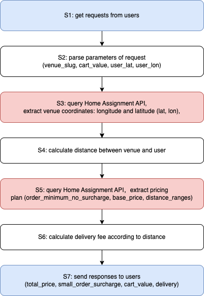
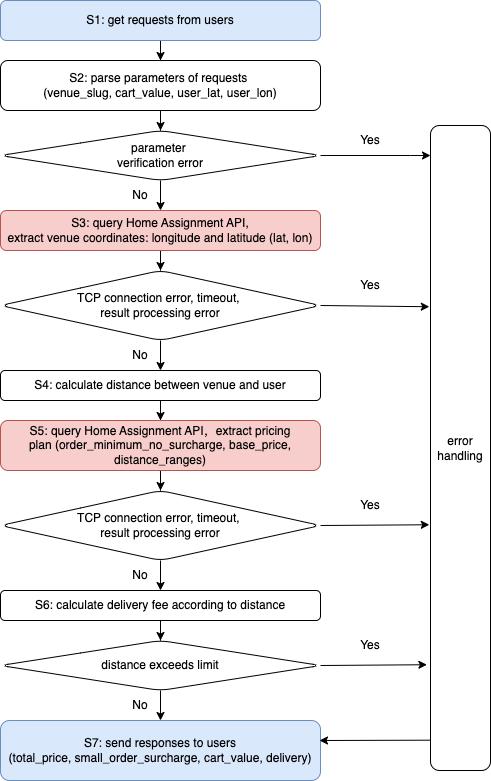
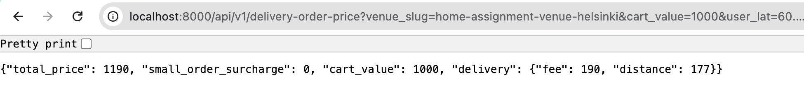

Author: Danmei Huang
Date: 2025-01-25
The task of the project is to develop a DOPC (Delivery Order Price Calculator) service for Wolt. It is an imaginary backend service which calculates the total price and price breakdown of a delivery order for a user.
DOPC interacts with the Home Assignment API to fetch venue related data required to calculate the prices. The term venue refers to any kind of restaurant / shop / store. It first requests for the venue's location, then calculates the price based on its distance to the user and the price rules.
The DOPC service provides a single endpoint: GET /api/v1/delivery-order-price, which takes the following as query parameters:
The endpoint should return a JSON response in the following format:
{
"total_price": 1190,
"small_order_surcharge": 0,
"cart_value": 1000,
"delivery": {
"fee": 190,
"distance": 177
}
}where
Home Assignment API is a backend service from which DOPC requests for data. It provides two JSON endpoints:
https://consumer-api.development.dev.woltapi.com/home-assignment-api/v1/venues/home-assignment-venue-helsinki/statichttps://consumer-api.development.dev.woltapi.com/home-assignment-api/v1/venues/home-assignment-venue-helsinki/dynamicDOPC requests for the location of the venue [longitude, latitude] from the static endpoint. It requests for order_minimum_no_surcharge, base_price, and distance_ranges from the dynamic endpoint.
More details about the task can be found here.
Without considering potential errors, the entire workflow for processing a user's request can be divided into 7 states：

The workflow can be divided into three types of states:
Since some states involve logic that are out of our control, the complete workflow incorporates error handling in four critical states:
When a user request fails to be processed, DOPC will return the processing status and corresponding error message to the user without terminating the entire process.

DOPC is implemented using Python and the aiohttp web framework for several key reasons:
In the implementation, I have identified the following challenges:
I have completed a scalable DOPC service, which mainly consists of the following parts：
README.mdDOPC_design_document.md: Design document of DOPC serviceconfig.toml: Configuration fileserver.py: DOPC server (call either dopc_service.py or load_balancer.py, set by use_balancer_flag in config.toml)dopc_service.py: A DOPC service, can run independentlyload_balancer.py: Load balancermock_user_requests.py: User request simulator for integrate testmock_home_assignment_api.py: Home Assignment API simulator for integrate testtest_rate_limits.py: Test rate limits of Home Assignment APIimages/ Image files directorydopc_service.pyIn dopc_service.py, we use a shared session pool to improve the efficiency when interacting with Home Assignment API. Session pool allows connection reuse and reduces the overhead of creating and closing sessions for each request.
class APIConnectionPool:
def __init__(self, pool_size: int = 5, health_check_interval: int = 30):
.
.
# Use lists for session pools
self.static_sessions = []
self.dynamic_sessions = []There is an internal pointer (rotational increase) to select the corresponding sessions for each user request. Another key feature is that we check the health of the sessions by sending a request to Home Assignment API every 30 seconds, and replace it when necessary.
load_balancer.py) for large amounts of user requestsload_balancer.py is a shechuler which starts multiple DOPC services as separate processes and forwards user requests to these DOPC services. Like APIConnectionPool, there are stable connections between the load_balancer and the DOPC services, as well as health check of the connections.
The following snippet shows how the load balancer start DOPC services.
async def start(self):
"""Initialize services and establish connections"""
print(f"Starting {self.num_services} DOPC services...")
for i in range(self.num_services):
port = self.base_port + i
# Start service process
process = subprocess.Popen(
["python", "dopc_service.py", str(port)],
stdout=subprocess.PIPE,
stderr=subprocess.PIPE,
text=True # Get text output
)
self.services[port] = processTo manage computational resources effectively, each DOPC service implements a Semaphore with a limit of 5000 concurrent requests. This ensures controlled resource utilization while maintaining service stability and responsiveness, as demonstrated in the following code snippet.
# Create a global semaphore to limit concurrent requests
request_semaphore = asyncio.Semaphore(N_MAX_REQUEST) # Max concurrent requests
# Define handlers
async def calculate_delivery_price(request):
try:
# Try to acquire semaphore
async with request_semaphore:
# Log incoming request
current_time = time.strftime("%H:%M:%S")
print(f"[{current_time}] Received request")However, I think this might not be necessary since aiohttp web server (web.Application) has its own internal request handling mechanism to prevent overwhelming. But I just keep semaphore for DOPC in case of unexpected circumstances.
config.tomlIn config.toml, we can configure different options
[general]
host="localhost"
use_balancer_flag=false # if start load_balancer.py or dopc_service.py
dopc_end_point='/api/v1/delivery-order-price'
dopc_port = 8000
[dopc_service]
mock_home_assignment_flag = false # if use mock_home_assignment_api.py
n_max_request=5000 # maximum number of user requests that can be handled per dopc service process
base_api_url = "https://consumer-api.development.dev.woltapi.com/home-assignment-api/v1"
mock_base_api_url = "http://localhost:10000/home-assignment-api/v1"
[dopc_balancer]
service_port_start = 49152 # Using dynamic port range, port for dopc services
num_services = 5 # number of dopc servicesDOPC implements a multi-layer error handling strategy to handle Validation Errors, Network Errors and Business Logic Errors.
It is uncertain whether there are Validation Errors when user send their requests. DOPC uses BaseModel for validation and type checking. When Errors happen, DOPC returns users a consistent error format:
class DeliveryDetails(BaseModel):
fee: int = Field(..., gt=0, description="Delivery fee in cents")
distance: int = Field(..., gt=0, description="Distance in meters")
@field_validator('fee')
@classmethod
def validate_fee(cls, v):
if v < 0:
raise ValueError('Delivery fee cannot be negative')
if v > 1500000: # 15000 EUR
raise ValueError('Delivery fee exceeds maximum allowed value')
return vKey Models:
DeliveryOrderRequest: Validates incoming request parametersDeliveryPriceResponse: Ensures response format consistencyDeliveryDetails: Validates delivery-specific dataIt is uncertain whether there are Network Errors such as Timeouts, Connection failures, and API unavailable When DOPC makes requests to Home Assignment API or scheduler makes requests to multiple DOPC services, so some verification is also required. When Network Errors happen, DOPC returns users a consistent error format:
async def make_request(self, session: ClientSession, url: str) -> Tuple[bool, Dict[str, Any] | str]:
"""Make request with timeout handling"""
try:
async with session.get(url) as response:
if response.status == 200:
return True, await response.json()
else:
return False, f"Request failed with status: {response.status}"
except asyncio.TimeoutError:
return False, "Request timed out"
except Exception as e:
return False, f"Request error: {str(e)}"It is uncertain whether there are Business Logic Errors such as Distance exceeded, Invalid coordinates and Price calculation in the data extracted from Home Assignment API, so some verification is also required. When Errors happen, DOPC returns users a consistent error format:
Custom validation for coordinate data:
def validate_coordinates(self, lat: float, lon: float) -> Tuple[bool, str]:
"""Validate latitude and longitude values"""
try:
if not isinstance(lat, (int, float)) or not isinstance(lon, (int, float)):
return False, "Coordinates must be numeric"
if not -90 <= lat <= 90:
return False, f"Invalid latitude: {lat}. Must be between -90 and 90"
if not -180 <= lon <= 180:
return False, f"Invalid longitude: {lon}. Must be between -180 and 180"
return True, ""
except Exception as e:
return False, f"Coordinate validation error: {str(e)}"I did not perform unit test since the implementations only involve simple calculations and there are enough error handling to capture the errors.
curl "http://localhost:8000/api/v1/delivery-order-price?venue_slug=home-assignment-venue-helsinki&cart_value=2000&user_lat=60.17094&user_lon=24.93087"Reponse is as expected. DOPC returned a Json response:
{
"total_price": 2190,
"small_order_surcharge": 0,
"cart_value": 2000,
"delivery": {
"fee": 190,
"distance": 177
}
}curl "http://localhost:8000/api/v1/delivery-order-price?venue_slug=home-assignment-venue-helsinki&cart_value=2000&user_lat=200.17094&user_lon=24.93087"Reponse is as expected. DOPC returned error information.
{"success": false, "error": "Validation error: 1 validation error for DeliveryOrderRequest\nuser_lat\n Value error, Latitude must be between -90 and 90 degrees [type=value_error, input_value=200.17094, input_type=float]\n For further information visit https://errors.pydantic.dev/2.10/v/value_error"}Or click here to test the service.
Response is as expected:

While single user request testing confirms basic functionality of the DOPC service, it does not validate the service's ability to handle concurrent requests at scale - a critical requirement for production environments. To address this limitation, we developed mock_user_requests.py, a simulator tool that generates and sends multiple simultaneous requests to stress test the service under load.
Start the simulator：
# Default: 50 users, 0.5s delay between requests, 2 requests per user
python mock_user_requests.py
# Or, custom configuration
python mock_user_requests.py --users 50 --delay 0.5 --requests 2Test results for simulating 50 users, 0.5s delay between requests, 2 requests per user:
Starting simulation with 50 users...
User 13 | Rate Limited | Time: 0.459s
User 25 | Rate Limited | Time: 0.459s
......
User 12 | Status: 200 | Time: 2.269s | Price: 1690 cents
User 18 | Status: 200 | Time: 2.269s | Price: 2082 cents
User 23 | Distance Exceeded | Time: 2.269s
^C
Simulation completed in 2.56 seconds
=== Test Summary ===
Total Users: 50
Requests per User: 2
Total Requests: 50
Response Breakdown:
✅ Successful: 24 (48.0%)
üìç Distance Exceeded: 16 (32.0%)
⏳ Rate Limited: 10 (20.0%)
❌ Other Errors: 0 (0.0%)
üîå Connection Errors: 0 (0.0%)
Timing Statistics:
Average Response Time: 1.315s
Min Response Time: 0.459s
Max Response Time: 2.269s
Simulation stopped by userThe test results demonstrate that DOPC successfully processed requests and handled errors as designed. However, a notable observation is that 20% of requests failed due to rate limiting. Further testing with the simulator consistently showed rate-limited failures around 30% of total requests. This concerning pattern warrants deeper investigation, which will be explored in the following section.
Several issues were encountered during implementation and testing that require further investigation to determine whether they originate from DOPC or external factors.
During testing with the user simulator, we observed a consistently high percentage of request failures due to rate limiting. We hypothesized that these failures stemmed from access restrictions imposed by the Home Assignment API rather than issues within DOPC itself. To verify this hypothesis, we conducted targeted testing of the Home Assignment API's rate limiting behavior using test_rate_limits.py, which sends 100 requests with a 0.1-second delay between each request. The test results, shown below, revealed that approximately 20% of direct requests to the Home Assignment API failed due to rate limiting, confirming that the API's built-in rate limiting mechanism is indeed the source of these failures.
python test_rate_limits.py
Starting rate limit test at 2025-01-23 17:43:28.798051
Making 100 requests with 0.1s delay between requests
...
=== Test Summary ===
Duration: 12.34 seconds
Total Requests: 100
Response Breakdown:
✅ Successful: 80 (80.0%)
⏳ Rate Limited: 20 (20.0%)
üìç Distance Exceeded: 0 (0.0%)
❌ Other Errors: 0 (0.0%)
üîå Connection Errors: 0 (0.0%)
Timing Statistics:
Average Response Time: 1.504s
Min Response Time: 0.583s
Max Response Time: 2.208s
Requests/Second: 8.1
To properly test the DOPC code in isolation, we created a simulator for the Home Assignment API called mock_home_assignment_api.py that removes the rate limiting constraints. Using this simulator in place of the actual Home Assignment API, we ran the user simulator tests again with the following results:
python mock_user_requests.py --users 50 --delay 0.5 --requests 2Starting simulation with 50 users...
User 3 | Status: 200 | Time: 0.048s | Price: 3390 cents
User 6 | Status: 200 | Time: 0.048s | Price: 2390 cents
......
User 15 | Status: 200 | Time: 0.004s | Price: 1390 cents
User 34 | Distance Exceeded | Time: 0.002s
User 38 | Status: 200 | Time: 0.002s | Price: 2390 cents
User 33 | Distance Exceeded | Time: 0.187s
^C
Simulation completed in 5.50 seconds
=== Test Summary ===
Total Users: 50
Requests per User: 2
Total Requests: 100
Response Breakdown:
✅ Successful: 85 (85.0%)
üìç Distance Exceeded: 15 (15.0%)
⏳ Rate Limited: 0 (0.0%)
❌ Other Errors: 0 (0.0%)
üîå Connection Errors: 0 (0.0%)
Timing Statistics:
Average Response Time: 0.121s
Min Response Time: 0.002s
Max Response Time: 0.212s
Simulation stopped by userThe test results confirm that our implementation is working as intended. With the mock API that removes rate limiting, no requests failed due to rate limits, validating that our code itself is not the source of any rate limiting issues. This provides confidence in the robustness of our implementation.
I would like to highlight some features in the DOPC implementation:
config.toml These features may be useful in the actual production.